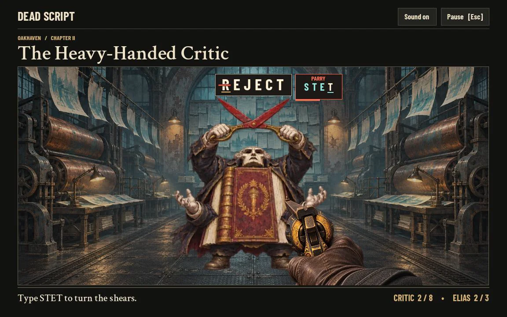

Free online touch typing lessons
A property slip has turned up under Elias Thorne’s door. Over 33 lessons, you’ll use his typewriter to compare the clerk’s carbon copy with marks from your own keys.
F, J and Space
Start with two keys and a thumb. Compare pairs of impressions and leave one clean space between them.
Home row
Add one finger pair at a time. From A through semicolon, the clerk’s list takes shape under your resting fingers.
Top row
Reach up for letters such as E, R and U. Return to F and J as Elias compares the edges of two slips.
Bottom row
Reach down for V, M and the other lower keys. Cross between rows to copy the inventory from a waxed envelope.
Word spacing and double letters
Give each repeated letter its own tap. Copy the packing note with a single space between words.
Shift, punctuation and corrections
Hold Shift with the hand opposite the letter. When a stray lowercase e appears in the proof, lift it with Delete or Backspace and type a capital E.
The number row
Reach up for the figures in a lending register. Read mixed entries of letters and numbers, then return each finger home.
Typing moving words
Two paper silhouettes hang from the carriage. Pick a target by its first letter, finish its word, then turn to the other.

Watch Mac gameplayBeyond the typing desk
Dead Script
In the office, a typed word is evidence. In the Filing Aisle, it fires Elias’s ink revolver. Out at the Red Fissure, every word you finish lays another plank across the gap.
Explore the Mac game to follow the Golden Ribbon through five districts of Oakhaven.